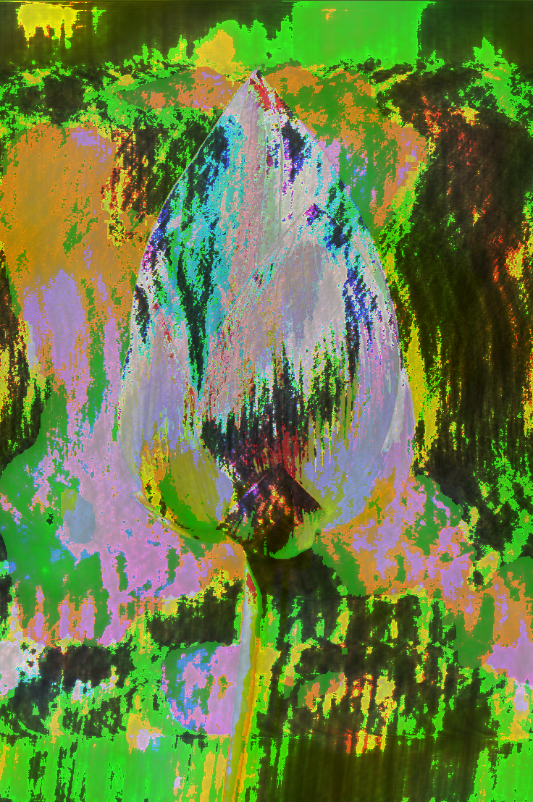
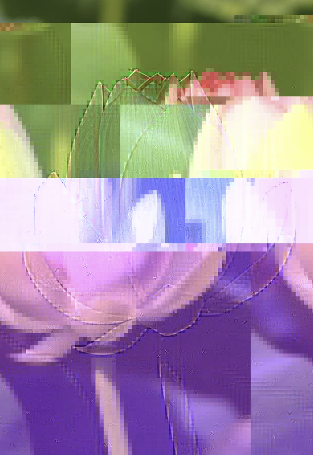
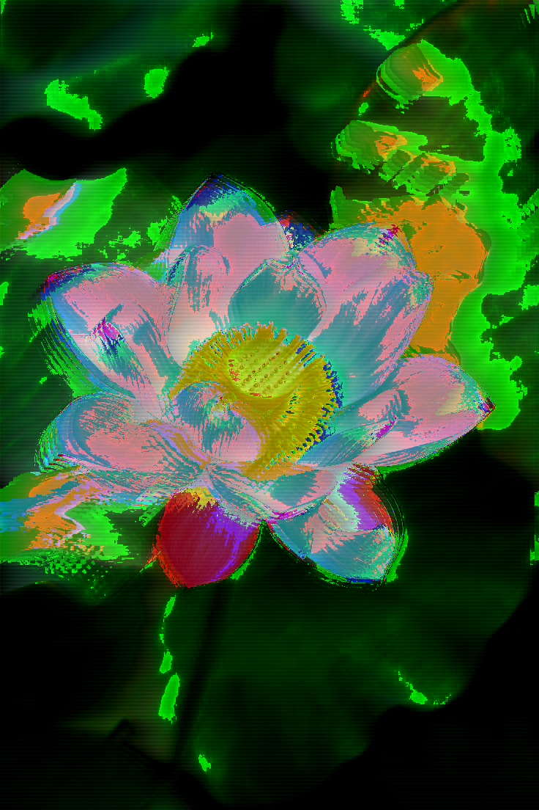

This is a glitch art I made using Notepad++ and Audacity.
I wanted this sequence to represent patience, similar to waiting for a loading screen to finish and also unexpected outcomes. I kind of feel like you should never expect perfect outcomes which can be reflected in this glitch art. The bud and bloom (first and third) are glitched using Audacity while the blossoming one (middle) is glitched using Notepad++.


